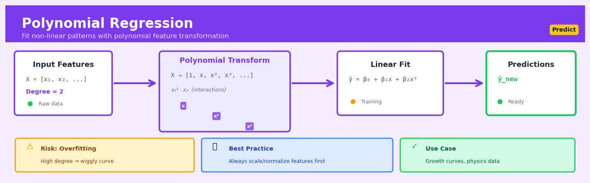

Polynomial Regression#


The biggest mistake I see with polynomial regression is jumping straight to degree 5 or 6 without cross-validation—you'll get a beautiful training fit that completely falls apart on new data. Always start with degree 2, check your validation performance, and only increase if there's clear evidence of remaining non-linearity. Also, feature scaling isn't optional here; x-squared terms explode in magnitude and will wreck your numerical stability if you skip normalization.
The 60-Second Version#
What it does: Polynomial regression fits curved lines through your data when straight lines don’t capture the real pattern.
When to use it: When you see a relationship between two variables that clearly bends or curves—sales that accelerate then plateau, costs that rise slowly then spike, or performance that peaks then declines.
What you get back: A formula that predicts your outcome variable across the full range of your input, accurately capturing the curve you observed.
Difficulty |
Easy |
Typical runtime |
Seconds on 100K rows |
What you bring |
A dataset with one input variable and one outcome variable showing a curved relationship |
What you get |
A curved prediction formula and forecast values for new inputs |
Heuristix bucket |
Predict — Machine Learning & Forecasting |
Higher-degree polynomials fit training data beautifully but often make wildly unreliable predictions outside your observed range—always validate on held-out data before trusting the curve.
Learning Objectives#
After reading this chapter, a business user will be able to:
Identify scenarios where relationships between variables follow curved rather than straight-line patterns, such as diminishing returns in marketing spend or accelerating cost structures in operations.
Interpret polynomial regression coefficients and visualizations to explain to stakeholders whether increasing a predictor (like price or investment) will have increasing, decreasing, or reversing effects on the outcome.
Decide the appropriate level of complexity needed in a forecast by weighing the benefits of capturing nuanced patterns against the risks of fitting to noise in historical data.
After reading this chapter, a data scientist will be able to:
Implement polynomial regression using feature transformation techniques while avoiding common pitfalls like multicollinearity and numerical instability in higher-degree polynomials.
Select the optimal polynomial degree by applying cross-validation and regularization methods to balance model flexibility with generalization performance.
Diagnose overfitting, extrapolation failures, and ill-conditioned design matrices by examining residual plots, validation curves, and condition numbers of the feature matrix.
Overview#
Polynomial regression is an extension of linear regression that models the relationship between a predictor variable \(x\) and a response variable \(y\) as an \(n\)th-degree polynomial function. Despite fitting curved relationships, polynomial regression remains a linear model in the statistical sense because the response is linear in the unknown parameters (the polynomial coefficients). This technique belongs to the family of supervised learning methods for regression and serves as a foundational approach for capturing nonlinear patterns without abandoning the interpretable framework of ordinary least squares.
When to Use This#
Use polynomial regression when:
The relationship between predictor and response is curved but smooth — You observe a clear nonlinear pattern in scatter plots or residuals from linear regression, and the curvature can be reasonably approximated by a polynomial function (e.g., diminishing returns in advertising spend).
You need interpretable coefficients for nonlinear effects — Business stakeholders require understanding of how the effect of a variable changes across its range, and polynomial terms provide explicit coefficients for linear, quadratic, and higher-order effects.
Domain knowledge suggests a polynomial relationship — Physical laws, economic theory, or biological processes often follow polynomial forms (e.g., projectile motion is quadratic in time, cost curves may be cubic).
You have sufficient data density across the predictor range — Polynomial regression requires observations throughout the domain to estimate curvature reliably; sparse regions will produce unreliable extrapolations.
The degree of nonlinearity is modest (typically degree 2–4) — When the underlying relationship can be captured with low-degree polynomials, this approach offers a good balance of flexibility and stability.
You want a baseline nonlinear model before trying more complex methods — Before deploying splines, kernel regression, or neural networks, polynomial regression provides a simple benchmark.
Do NOT use polynomial regression when:
The relationship has discontinuities, sharp bends, or local features — Polynomials are globally smooth and will produce oscillations (Runge’s phenomenon) when forced to fit local irregularities; consider splines or piecewise regression instead.
You must extrapolate beyond the observed data range — Polynomial predictions diverge rapidly outside the training domain, often producing absurd values; this is especially dangerous with higher-degree polynomials.
You have multiple predictors with complex interactions — While polynomial features can be extended to multiple variables, the number of terms explodes combinatorially; consider regularised methods or tree-based models instead.
The sample size is small relative to the polynomial degree — Fitting a degree-\(d\) polynomial requires estimating \(d+1\) parameters; insufficient data leads to severe overfitting.
Questions This Answers#
Understanding Non-Linear Performance Patterns#
Why does our customer satisfaction score increase rapidly at first with spending but then level off after $500?
Is there a sweet spot for advertising spend where we get the best return, or does more spending always help?
Why do our conversion rates seem to follow a curve rather than a straight line as we increase email frequency?
At what temperature does our factory output peak, and when does extreme heat start reducing productivity?
Does employee productivity keep climbing with more training hours, or is there a point of diminishing returns?
Forecasting with Curved Trends#
What will our monthly energy costs be next quarter if this curved pattern of usage growth continues?
If product pricing follows this accelerating trend we’ve seen over 18 months, what should we budget for Q4?
How many support tickets should we expect at 50,000 users given that ticket volume doesn’t grow linearly with our user base?
Will our subscription renewals keep declining at this rate, or does the curve suggest we’ll hit a floor around 65%?
What’s our projected server load at 100,000 concurrent users if the relationship between users and load isn’t proportional?
Optimizing Curved Relationships#
Should we increase our promotion budget to $75,000 or have we already passed the point where additional spend pays off?
What’s the optimal price point where we maximize revenue, considering that both too high and too low hurt our total sales?
How many sales calls per month should our reps make to maximize conversions without burning them out?
Is adding a fourth distribution center worth it, or does the cost curve suggest we’re better off optimizing our existing three?
How It Works#
Imagine you’re trying to predict how much ice cream a beach vendor sells based on the day’s temperature. At first, you draw a straight line through your data: hotter days mean more sales, in a steady climb. But you notice something’s off—the line misses the pattern. In reality, sales climb gently in mild weather, then rocket up as it gets truly hot, then level off when it’s sweltering because people retreat indoors. That curved, swooping relationship can’t be captured by a straight line. Polynomial regression solves this by bending your line into a curve that hugs the real pattern, transforming your simple straight-edge ruler into a flexible French curve that can trace the true shape of your data.
ORIGINAL DATA FEATURE TRANSFORMATION FITTED CURVE
(Temperature) (Add Powers)
Sales
x x x² x³ ↑
↓ ↓ ↓ ↓ │ ╱──╲
65° → Transform → 65 4225 274625 │ ╱ ╲___
70° → Transform → 70 4900 343000 │╱
75° → Transform → 75 5625 421875 └─────────────→
80° → Transform → 80 6400 512000 Temp
Linear fit: Polynomial fit:
(straight line) (curved line)
│ ╱──╲
│ ╱ ╲
│ ╱ ╲___
─────┼───── ─────────────────
Step 1: Create new features from your original data. Polynomial regression takes your single input variable—say, temperature—and manufactures additional columns by squaring it, cubing it, and raising it to higher powers. If you had temperature equals seventy degrees, you now also have temperature-squared equals four thousand nine hundred, and temperature-cubed, and so on. You’re not collecting new data; you’re creating mathematical siblings of your original measurement.
Step 2: Treat the polynomial problem as a straight-line problem in disguise. Even though you want to fit a curve, you now pretend you have multiple separate predictors: temperature, temperature-squared, temperature-cubed. This lets you use the exact same ordinary least squares machinery that simple linear regression uses—you’re just feeding it more columns.
Step 3: Find the best-fitting coefficients. The algorithm searches for the weights (coefficients) for each power of your variable that minimize the total squared distance between your curve and the actual data points. It’s balancing how much influence the linear term has versus the squared term versus the cubed term, adjusting each until the curve bends in just the right way.
Step 4: Generate predictions using the curved relationship. Once trained, the model takes a new temperature value, raises it to all the necessary powers, multiplies each by its learned coefficient, and sums everything together. The result is a prediction that follows the curve rather than a straight line.
The key insight: By treating powers of a variable as separate predictors, polynomial regression transforms any curved pattern into a straight-line problem that standard linear methods can solve, letting you capture complex relationships while keeping the mathematics simple and familiar.
The Intuition#
Imagine you are an agricultural scientist studying how crop yield responds to fertiliser application. At low application rates, adding more fertiliser increases yield substantially. At moderate rates, the benefit continues but with diminishing returns. At very high rates, excess fertiliser actually damages the soil and reduces yield. If you tried to draw a straight line through this data, you would systematically underpredict yields at moderate fertiliser levels and overpredict at the extremes. The relationship is fundamentally curved—it rises, levels off, and eventually falls.
Polynomial regression captures this curvature by including powers of the predictor variable. A quadratic polynomial (degree 2) can model a single peak or trough—perfect for the fertiliser example where yield rises then falls. A cubic polynomial (degree 3) can capture one inflection point, allowing the curve to change from concave to convex. Each additional degree adds one more “bend” the model can accommodate. The key insight is that we are not abandoning linear regression; we are creating new predictor variables by raising the original predictor to successive powers, then fitting a standard linear model to this expanded feature set.
The power of this approach lies in its simplicity: all the machinery of ordinary least squares—closed-form solutions, confidence intervals, hypothesis tests, and diagnostic tools—applies directly. We are not estimating nonlinear parameters through iterative optimisation; we are simply regressing \(y\) on \(x\), \(x^2\), \(x^3\), and so forth. This means polynomial regression inherits the computational efficiency and statistical theory of linear models while gaining the flexibility to approximate smooth nonlinear functions. However, this flexibility comes with a cost: higher-degree polynomials can oscillate wildly between data points, fitting noise rather than signal, and they extrapolate catastrophically beyond the observed range.
The Mathematics#
Problem Setup and Notation#
Let \(\{(x_i, y_i)\}_{i=1}^{n}\) be a dataset of \(n\) observations, where \(x_i \in \mathbb{R}\) is the predictor and \(y_i \in \mathbb{R}\) is the response. We seek to model the conditional expectation \(\mathbb{E}[y \mid x]\) as a polynomial of degree \(d\):
where \(\beta_0, \beta_1, \ldots, \beta_d\) are the unknown coefficients and \(\varepsilon_i\) is the error term.
Matrix Formulation#
Define the design matrix \(\mathbf{X} \in \mathbb{R}^{n \times (d+1)}\) as:
Let \(\mathbf{y} = (y_1, y_2, \ldots, y_n)^\top\) and \(\boldsymbol{\beta} = (\beta_0, \beta_1, \ldots, \beta_d)^\top\). The model becomes:
Assumptions#
The classical assumptions for polynomial regression (and linear regression generally) are:
Linearity in parameters: The model is linear in \(\boldsymbol{\beta}\), which is satisfied by construction.
Full rank: \(\mathbf{X}\) has full column rank, i.e., \(\text{rank}(\mathbf{X}) = d + 1\). This requires \(n \geq d + 1\) and no exact collinearity among polynomial terms.
Exogeneity: \(\mathbb{E}[\varepsilon_i \mid x_i] = 0\) for all \(i\).
Homoscedasticity: \(\text{Var}(\varepsilon_i \mid x_i) = \sigma^2\) for all \(i\).
No autocorrelation: \(\text{Cov}(\varepsilon_i, \varepsilon_j) = 0\) for \(i \neq j\).
Normality (for inference): \(\varepsilon_i \sim \mathcal{N}(0, \sigma^2)\).
Objective Function and Optimisation#
We minimise the residual sum of squares (RSS):
Taking the gradient with respect to \(\boldsymbol{\beta}\) and setting it to zero:
This yields the normal equations:
When \(\mathbf{X}^\top \mathbf{X}\) is invertible (full rank assumption), the unique solution is:
Properties of the Estimator#
Under the stated assumptions, the OLS estimator has the following properties:
Unbiasedness:
Variance:
Gauss-Markov Theorem: \(\hat{\boldsymbol{\beta}}\) is the Best Linear Unbiased Estimator (BLUE).
The unbiased estimator of \(\sigma^2\) is:
Multicollinearity in Polynomial Terms#
A critical numerical issue arises because polynomial terms are highly correlated. For example, if \(x_i \in [0, 10]\), then \(x_i\) and \(x_i^2\) will have correlation exceeding 0.95. This causes \(\mathbf{X}^\top \mathbf{X}\) to be ill-conditioned, leading to:
Large standard errors on individual coefficients
Numerical instability in computing \((\mathbf{X}^\top \mathbf{X})^{-1}\)
Sensitivity to small perturbations in the data
Centering mitigates this: replace \(x_i\) with \((x_i - \bar{x})\) before computing polynomial terms. This orthogonalises the lower-degree terms from higher-degree terms, improving numerical stability without changing the fitted values.
Model Selection: Choosing the Degree#
The bias-variance tradeoff governs degree selection:
Low degree: High bias (underfitting), low variance
High degree: Low bias, high variance (overfitting)
Common approaches include:
Adjusted \(R^2\):
Akaike Information Criterion (AIC):
Bayesian Information Criterion (BIC):
Cross-validation: Estimate out-of-sample prediction error directly.
Relationship to Other Methods#
Spline regression: Uses piecewise polynomials joined at knots, avoiding the global oscillation problem of high-degree polynomials.
Kernel regression: Implicitly uses infinite-degree polynomials through kernel functions.
Ridge/Lasso regression: Can be combined with polynomial features to regularise coefficient magnitudes.
Taylor series approximation: Polynomial regression can be viewed as fitting a truncated Taylor expansion of an unknown smooth function.
Understanding the Mathematics#
The Polynomial Model#
The equation:
Read it aloud:
The response variable equals a base value, plus a coefficient times the input, plus another coefficient times the input squared, plus another coefficient times the input cubed, and so on up to the nth power, plus some random error.
What each symbol means:
\(y\) = the response variable we’re trying to predict (e.g., sales revenue)
\(\beta_0\) = the intercept (baseline value when \(x = 0\))
\(\beta_1, \beta_2, \beta_3, \ldots, \beta_n\) = coefficients that weight each power of \(x\)
\(x\) = the predictor variable (e.g., advertising spend)
\(x^2, x^3, \ldots, x^n\) = the predictor raised to the 2nd, 3rd, through nth power
\(n\) = the degree of the polynomial (how many bends the curve can have)
\(\varepsilon\) = random error (the unpredictable part)
A concrete numerical example:
A coffee shop models daily revenue based on temperature. Using a quadratic model (degree 2): \(y = 150 + 8x - 0.12x^2\). If the temperature is 25°C, then revenue = \(150 + 8(25) - 0.12(25)^2 = 150 + 200 - 0.12(625) = 150 + 200 - 75 = \$275\). The negative \(x^2\) term captures diminishing returns: extremely hot days reduce coffee sales.
Why this equation matters:
This equation lets us model relationships that curve and bend—like how moderate temperatures boost coffee sales but extreme heat drives customers away—something a straight line could never capture.
The Matrix Form#
The equation:
where \(\mathbf{X}\) is the design matrix containing columns \([1, x, x^2, \ldots, x^n]\).
Read it aloud:
The vector of all response values equals a matrix of predictor powers multiplied by a vector of coefficients, plus a vector of errors.
What each symbol means:
\(\mathbf{y}\) = column vector of all observed response values
\(\mathbf{X}\) = design matrix where each row is one observation and columns are \(1, x, x^2, x^3, \ldots\)
\(\boldsymbol{\beta}\) = column vector of coefficients \([\beta_0, \beta_1, \beta_2, \ldots, \beta_n]\)
\(\boldsymbol{\varepsilon}\) = column vector of errors for each observation
A concrete numerical example:
Three days of data: temperatures [20, 25, 30] and revenues [$260, $275, $270]. The design matrix for a quadratic model is:
Matrix multiplication \(\mathbf{X}\boldsymbol{\beta}\) computes the prediction for all three days simultaneously.
Why this equation matters:
The matrix form allows computers to estimate all coefficients at once using linear algebra, turning a curve-fitting problem into efficient matrix operations that scale to millions of data points.
The Normal Equation#
The equation:
Read it aloud:
The estimated coefficients equal the inverse of the matrix “X-transpose times X,” multiplied by “X-transpose,” multiplied by the response vector.
What each symbol means:
\(\hat{\boldsymbol{\beta}}\) = the estimated coefficient vector (our best guess)
\(\mathbf{X}^T\) = the transpose of the design matrix (rows become columns)
\((\mathbf{X}^T\mathbf{X})^{-1}\) = the inverse of the product (like division in matrix algebra)
\(\mathbf{y}\) = the observed response values
A concrete numerical example:
For our coffee shop with simplified numbers, if \(\mathbf{X}^T\mathbf{X}\) produces a 3×3 matrix and its inverse multiplied by \(\mathbf{X}^T\mathbf{y}\) yields \(\hat{\boldsymbol{\beta}} = [150, 8, -0.12]^T\), we’ve found the exact coefficients that minimize squared prediction errors across all observations.
Why this equation matters:
This formula gives us the optimal coefficients—the unique curve that minimizes the sum of squared errors—guaranteeing we’ve found the best-fitting polynomial for our data.
The Big Picture#
The mathematics of polynomial regression transforms a curved relationship into something we can solve using linear algebra. We stack powers of the input (\(x, x^2, x^3, \ldots\)) as separate columns in a matrix, then apply the same least-squares machinery that works for straight lines. This approach is chosen because it remains convex—there’s exactly one global minimum, no risk of getting stuck in local optima like with neural networks. The entire mathematical framework boils down to one intuition: we’re fitting a flexible curve by treating each power of \(x\) as if it were a separate, independent variable in a linear model. That’s why it’s called “linear” regression despite producing curves—the math is linear in the coefficients, not the shape of the predictions.
Python Implementation#
import numpy as np
import pandas as pd
import matplotlib.pyplot as plt
from sklearn.preprocessing import PolynomialFeatures
from sklearn.linear_model import LinearRegression
from sklearn.model_selection import cross_val_score
from sklearn.pipeline import Pipeline
from sklearn.metrics import mean_squared_error, r2_score
import statsmodels.api as sm
# Set random seed for reproducibility
np.random.seed(42)
# =============================================================================
# Generate realistic synthetic data: diminishing returns relationship
# Scenario: Marketing spend (£000s) vs Sales uplift (%)
# =============================================================================
n_samples = 150
x = np.random.uniform(0, 100, n_samples) # Marketing spend: £0k to £100k
# True relationship: quadratic with diminishing returns and eventual decline
# Sales uplift = 0.5 + 0.8*x - 0.006*x^2 + noise
y_true = 0.5 + 0.8 * x - 0.006 * x**2
y = y_true + np.random.normal(0, 3, n_samples) # Add realistic noise
# Create DataFrame for clarity
df = pd.DataFrame({'marketing_spend': x, 'sales_uplift': y})
print("=== Dataset Summary ===")
print(df.describe())
print()
# =============================================================================
# Example 1: Basic polynomial regression with scikit-learn
# =============================================================================
print("=== Example 1: Polynomial Regression with scikit-learn ===\n")
# Reshape for sklearn
X = df['marketing_spend'].values.reshape(-1, 1)
y = df['sales_uplift'].values
# Compare different polynomial degrees
degrees = [1, 2, 3, 4]
fig, axes = plt.subplots(2, 2, figsize=(12, 10))
axes = axes.flatten()
for idx, degree in enumerate(degrees):
# Create pipeline: polynomial features + linear regression
model = Pipeline([
('poly', PolynomialFeatures(degree=degree, include_bias=False)),
('linear', LinearRegression())
])
# Fit the model
model.fit(X, y)
# Generate predictions for smooth curve
X_plot = np.linspace(0, 100, 200).reshape(-1, 1)
y_pred_plot = model.predict(X_plot)
# Calculate metrics
y_pred = model.predict(X)
mse = mean_squared_error(y, y_pred)
r2 = r2_score(y, y_pred)
# Cross-validation score
cv_scores = cross_val_score(model, X, y, cv=5, scoring='neg_mean_squared_error')
cv_mse = -cv_scores.mean()
# Plot
axes[idx].scatter(X, y, alpha=0.5, label='Data')
axes[idx].plot(X_plot, y_pred_plot, 'r-', linewidth=2, label=f'Degree {degree}')
axes[idx].set_xlabel('Marketing Spend (£000s)')
axes[idx].set_ylabel('Sales Uplift (%)')
axes[idx].set_title(f'Degree {degree}: R² = {r2:.3f}, CV-MSE = {cv_mse:.2f}')
axes[idx].legend()
axes[idx].grid(True, alpha=0.3)
print(f"Degree {degree}:")
print(f" Training MSE: {mse:.3f}")
print(f" Training R²: {r2:.3f}")
print(f" CV MSE: {cv_mse:.3f}")
print(f" Coefficients: {model.named_steps['linear'].coef_}")
print(f" Intercept: {model.named_steps['linear'].intercept_:.3f}")
print()
plt.tight_layout()
plt.savefig('polynomial_comparison.png', dpi=150)
plt.show()
# =============================================================================
# Example 2: Statistical inference with statsmodels
# =============================================================================
print("=== Example 2: Statistical Inference with statsmodels ===\n")
# Create polynomial features manually for statsmodels
X_poly = np.column_stack([x, x**2])
X_poly_with_const = sm.add_constant(X_poly)
# Fit OLS model
ols_model = sm.OLS(y, X_poly_with_const).fit()
print
## Visualisations


## Using This in Heuristix
### What Data You'll Need
The Polynomial Regression node expects a dataset with at least one numeric predictor column and one numeric target column. Your data should be in tabular format where each row represents an observation.
**Example input:**
| Temperature | Sales |
|------------|-------|
| 15.2 | 245 |
| 22.8 | 412 |
| 18.5 | 318 |
The node will work with any numeric columns, though it performs best when your predictor variable shows a curved relationship with your target (think U-shapes, diminishing returns, or accelerating growth patterns).
### Configuration Parameters
| Parameter | What It Controls | Default | When to Change It |
|-----------|-----------------|---------|-------------------|
| **Predictor Column** | The input variable (x) used to predict | None (required) | Select the variable you believe influences your target in a nonlinear way |
| **Target Column** | The outcome variable (y) you want to predict | None (required) | Choose the metric you're trying to forecast or explain |
| **Polynomial Degree** | How many curves the model can fit (2 = quadratic, 3 = cubic, etc.) | 2 | Increase to 3-4 for more complex curves; keep low to avoid overfitting |
| **Train/Test Split** | Percentage of data held back for validation | 80/20 | Use 70/30 for smaller datasets (<500 rows) |
| **Include Intercept** | Whether to fit a y-intercept term | True | Rarely change; turn off only if your relationship must pass through zero |
### What You'll Get Back
**New Columns Added:**
- `predicted_[target]`: The model's prediction for each row
- `residual`: The difference between actual and predicted values (actual - predicted)
**Metrics Displayed:**
- **R² Score**: How much variance your polynomial explains (0-1 scale; higher is better)
- **RMSE**: Average prediction error in your target's units
- **Train vs. Test Performance**: Side-by-side comparison to spot overfitting
**Visualizations:**
- **Fitted Curve Plot**: Your original data points with the polynomial curve overlaid—this is where you'll visually confirm if the curve makes sense
- **Residuals Plot**: Shows if errors are randomly scattered (good) or show patterns (problems)
- **Actual vs. Predicted**: Diagonal scatter plot showing prediction accuracy
### Connecting Downstream
After fitting your polynomial model, you'll typically connect to:
- **Predict Node**: Apply your trained model to new data for forecasting
- **Model Comparison Node**: Stack against linear regression or other models to justify the added complexity
- **Feature Engineering Node**: Use the polynomial features as inputs to more complex models
- **Export Node**: Save predictions or the model itself for production use
### Quick Start: Fitting Your First Polynomial Model
1. **Connect your dataset** to the Polynomial Regression node input port
2. **Select your predictor and target columns** from the dropdowns—start with variables where you suspect a curved relationship
3. **Set polynomial degree to 2** for your first attempt (classic quadratic fit)
4. **Run the node** and examine the fitted curve plot—does the curve follow your data's natural shape?
5. **Check the R² score** on both train and test sets—if they're similar, you're good; if test is much lower, reduce the polynomial degree
6. **Connect to a Predict node** to score new data once satisfied
### Practical Tips from the Field
**Tip 1: Start simple, add complexity only if needed.** Degree 2 captures most real-world curves. Only move to degree 3-4 if your residuals plot shows clear patterns and domain knowledge supports it.
**Tip 2: Watch for edge explosions.** Polynomials can swing wildly beyond your data range. If predicting outside your training range, inspect predictions carefully—they may be unrealistic.
**Tip 3: Standardize for high-degree polynomials.** If using degree 3+, consider standardizing your predictor first (using the Standardize node upstream) to prevent numerical instability.
**Tip 4: Compare against linear.** Always run a simple linear regression alongside your polynomial. If R² improvement is under 5%, the simpler model is usually the better choice.
**Tip 5: Multiple predictors? Use this differently.** This node focuses on one predictor. For multiple variables with polynomial terms, connect to the Feature Engineering node first to create interaction terms, then use Multiple Regression.
## Config Recipes
### Recipe 1: Quick Exploration
**When to use:** Initial data exploration when you need to rapidly assess whether nonlinear patterns exist worth modeling further.
**Settings:**
| Parameter | Value | Why |
|-----------|-------|-----|
| `degree` | 2 | Captures basic curvature without overfitting noise |
| `fit_intercept` | True | Standard for most real-world data |
| `interaction_only` | False | Include all polynomial terms for full flexibility |
| Train/test split | 70/30 | Quick split, no cross-validation needed |
| Feature scaling | None | Skip preprocessing to minimize setup time |
**What you get:** A fast initial fit that reveals whether quadratic relationships exist, typically completing in seconds even on moderately large datasets.
**Trade-off:** Without feature scaling, coefficients may be numerically unstable and difficult to interpret; no validation of generalization performance.
### Recipe 2: Production-Grade Deployment
**When to use:** Building a polynomial model for deployment in production systems where reliability and validated performance are critical.
**Settings:**
| Parameter | Value | Why |
|-----------|-------|-----|
| `degree` | 2-3 (via grid search) | Systematically determine optimal complexity |
| `fit_intercept` | True | Standard unless domain knowledge dictates otherwise |
| Feature scaling | StandardScaler | Prevents numerical instability in polynomial terms |
| Cross-validation | 10-fold CV | Robust estimate of generalization error |
| Regularization | Ridge with α=1.0, 0.1, 0.01 (grid search) | Control overfitting from high-degree terms |
| Train/validation/test | 60/20/20 | Separate holdout test set never touched during tuning |
**What you get:** A rigorously validated model with documented performance metrics and numerical stability guarantees.
**Trade-off:** Significantly longer training time due to nested cross-validation; increased implementation complexity.
### Recipe 3: High-Dimensional Feature Space
**When to use:** Working with 10+ original features where polynomial expansion creates hundreds or thousands of terms.
**Settings:**
| Parameter | Value | Why |
|-----------|-------|-----|
| `degree` | 2 only | Higher degrees create unmanageable feature explosion |
| `interaction_only` | True | Include x₁×x₂ but exclude x₁², reducing features by ~50% |
| Feature scaling | StandardScaler | Essential for regularization effectiveness |
| Regularization | Lasso with α=0.01 | Automatic feature selection to handle sparsity |
| `max_iter` | 5000 | Lasso may need more iterations with many features |
**What you get:** A sparse model that automatically identifies which polynomial terms matter, keeping only 10-30% of generated features.
**Trade-off:** May miss important pure quadratic terms (x²) by excluding non-interaction polynomials.
### Recipe 4: Periodic Business Metrics
**When to use:** Modeling business metrics with seasonal patterns (monthly sales, quarterly earnings) where you suspect non-sinusoidal periodicity.
**Settings:**
| Parameter | Value | Why |
|-----------|-------|-----|
| `degree` | 3-4 | Captures asymmetric peaks/valleys in seasonal data |
| Feature engineering | Add `month_of_year` as categorical (one-hot encoded) | Combines periodic structure with polynomial trends |
| `fit_intercept` | True | Represents baseline level |
| Feature scaling | MinMaxScaler (0,1) | Preserves interpretability of time-based features |
| Regularization | Ridge with α=0.1 | Light regularization to smooth seasonal curves |
**What you get:** A model that captures both long-term polynomial trends and seasonal variations without requiring Fourier transforms.
**Trade-off:** Less interpretable than pure time series methods; assumes seasonal patterns remain stable.
## Business Applications
**Financial Services**
A regional credit union serving 150,000 members struggled with pricing home equity lines of credit (HELOCs) competitively while managing default risk. Linear models underestimated risk at extreme loan-to-value ratios, while complex machine learning approaches lacked regulatory transparency. A second-degree polynomial regression on credit utilization patterns captured the non-linear acceleration of default probability as borrowers approached their credit limits, enabling the credit union to price 18 basis points more competitively on low-risk accounts while tightening spreads on high-risk segments—resulting in $2.3M additional annual revenue without increasing loss rates.
**Retail**
An outdoor apparel retailer with 340 stores faced persistent stockouts of seasonal items because demand didn't follow a linear temperature relationship—sales of winter jackets surged dramatically once temperatures dropped below 5°C but plateaued above 15°C. By implementing a third-degree polynomial regression relating daily temperature to unit sales, the merchandising team reduced winter inventory write-downs by 28% and captured an additional $890K in revenue from items previously understocked during the critical November cold snap.
**Healthcare**
A network of 12 ambulatory surgery centers needed to optimize procedure scheduling but found that recovery room occupancy didn't scale linearly with case volume—inefficiencies compounded at higher volumes due to patient arrival clustering. A quadratic polynomial model relating hourly case starts to recovery bottlenecks helped the scheduling team identify the optimal 7.2 procedures per hour threshold, reducing patient discharge delays by 41 minutes on average and improving facility throughput enough to add 340 billable procedures annually worth approximately $1.8M in additional margin.
**Insurance**
A commercial auto insurer with a £450M book discovered that accident frequency for delivery fleets exhibited a U-shaped relationship with driver experience—both novice drivers (under 6 months) and highly experienced drivers (over 8 years, who became complacent) posed elevated risks. Traditional linear models mispriced both segments. A second-degree polynomial regression incorporating experience and its squared term enabled more accurate risk segmentation, reducing adverse selection losses by £3.2M annually while maintaining competitive pricing for the safest experience bands.
**Manufacturing**
A precision injection molding manufacturer producing automotive components faced costly defect rates that varied non-linearly with machine operating temperature. Engineers initially assumed a linear relationship, but a third-degree polynomial regression revealed an optimal temperature window where defects dropped precipitously, flanked by steep increases on either side. This insight reduced scrap rates from 4.7% to 1.9%, saving $680K annually in material costs and preventing 23,000 defective units from reaching customers.
**Logistics**
A last-mile delivery provider operating in dense urban markets found that delivery cost per package didn't decrease linearly with route density—costs dropped sharply from 1 to 8 stops per square kilometer, then flattened. A quadratic polynomial model helped operations managers identify which neighborhoods warranted market development investment and which had reached saturation, redirecting $1.4M in expansion capital toward higher-ROI territories and improving overall cost per delivery by 19%.
**Marketing**
An e-commerce beauty brand with 45,000 monthly site visitors noticed diminishing and eventually negative returns on email frequency—engagement peaked at 3.2 emails per week, then declined as customers felt overwhelmed. A second-degree polynomial regression modeling click-through rate against contact frequency identified the optimal cadence, lifting average CTR from 2.1% to 3.4% and reducing unsubscribe rates by half, preserving long-term list value estimated at $340K annually.
**Telecommunications**
A fiber broadband provider observed that customer lifetime value peaked for users consuming moderate bandwidth (150-400 GB monthly) but declined for extreme users who churned after service quality complaints or ultra-light users who switched to cheaper alternatives. Polynomial regression on usage patterns helped retention teams target interventions appropriately, reducing annual churn by 2.3 percentage points across a 280,000-subscriber base—worth approximately $4.1M in retained revenue.
**Energy**
A municipal utility managing peak demand pricing found that electricity consumption responded non-linearly to temperature—usage accelerated dramatically above 28°C as air conditioning load compounded. A polynomial model improved next-day demand forecasts, reducing costly emergency power purchases by 34% during summer peaks and saving ratepayers $520K annually.
**Public Sector**
A city traffic management department discovered that intersection throughput followed a cubic relationship with signal timing—too short caused gridlock, too long wasted green time, with a narrow optimum. Polynomial regression across 180 intersections reduced average commute times by 8.5 minutes during peak hours, translating to $12M in annual economic productivity gains.
**SaaS/Tech**
A project management software company with 18,000 enterprise users found that feature adoption followed a polynomial curve with team size—5-person teams had low adoption, 15-person teams peaked, and 40+ teams fragmented across tools. This insight reshaped their pricing tiers and onboarding flows, increasing expansion revenue by 27% within six months.
## Worked Example
Sarah Chen, a senior data scientist at Velocity Motors, was called into a Friday afternoon meeting with the VP of Product Development. The question on the table was deceptively simple: how does engine size affect fuel efficiency in their new line of hybrid vehicles? Linear models had consistently underperformed in testing, and the engineering team suspected a more complex relationship was at play. With the launch of their flagship model just six months away, pricing and marketing strategies hung in the balance—both departments needed accurate fuel economy predictions to finalize their campaigns.
Sarah pulled together a dataset from their testing facility that tracked 847 vehicles across various engine displacements. Each row represented a single vehicle configuration tested under standardized conditions. The data wasn't pristine—several records had missing torque values from sensor failures, and a few outliers existed where prototype engines had catastrophically failed during testing. Here's what a sample looked like:
| engine_displacement_L | horsepower | mpg_highway | test_temperature_F | vehicle_weight_lbs |
|----------------------|------------|-------------|-------------------|-------------------|
| 1.8 | 142 | 38.2 | 72 | 3250 |
| 2.4 | 178 | 34.1 | 68 | 3580 |
| 3.0 | 245 | 29.8 | 75 | 4100 |
| 3.6 | 295 | 26.3 | 70 | 4520 |
| 4.2 | 340 | 24.7 | 73 | 4890 |
Sarah opened her analysis notebook and started thinking through the modeling approach. She'd run a quick scatter plot that morning and noticed the relationship between engine displacement and MPG wasn't a straight downward line—it curved more steeply as engines got larger. A polynomial regression made sense here. She decided to start with a second-degree polynomial, reasoning that adding too many higher-order terms might overfit to the testing anomalies she'd seen in the data. She also chose to standardize the features first, knowing that polynomial terms could create numerical instability with raw values.
```python
import numpy as np
import pandas as pd
from sklearn.preprocessing import StandardScaler, PolynomialFeatures
from sklearn.linear_model import LinearRegression
from sklearn.model_selection import train_test_split
from sklearn.metrics import r2_score, mean_squared_error
# Load Sarah's cleaned dataset
df = pd.read_csv('velocity_motors_test_data.csv')
# Focus on the key relationship
X = df[['engine_displacement_L']].values
y = df['mpg_highway'].values
# Split data - Sarah kept 20% for final validation
X_train, X_test, y_train, y_test = train_test_split(
X, y, test_size=0.2, random_state=42
)
# Create polynomial features (degree=2)
poly = PolynomialFeatures(degree=2, include_bias=True)
X_train_poly = poly.fit_transform(X_train)
X_test_poly = poly.transform(X_test)
# Fit the model
model = LinearRegression()
model.fit(X_train_poly, y_train)
# Evaluate
y_pred = model.predict(X_test_poly)
print(f"R² Score: {r2_score(y_test, y_pred):.4f}")
print(f"RMSE: {np.sqrt(mean_squared_error(y_test, y_pred)):.2f} MPG")
print(f"\nCoefficients: {model.coef_}")
print(f"Intercept: {model.intercept_:.2f}")
The results came back stronger than Sarah expected. The polynomial model achieved an R² of 0.8734 on the test set, compared to 0.6421 for the linear model she’d run as a baseline. The RMSE dropped from 3.8 MPG to 2.1 MPG—a substantial improvement that would translate directly to more accurate EPA estimates. The coefficients revealed the story: the intercept sat at 42.15 MPG (the theoretical efficiency at zero displacement), the linear term was -8.23, and the quadratic term was -2.67. That negative quadratic coefficient confirmed what the engineers suspected—fuel efficiency didn’t just decline with engine size, it declined at an accelerating rate.
Sarah’s insight crystallized when she visualized the fitted curve overlaid on the actual data points. Between 1.5L and 2.5L displacement, the efficiency drop was relatively gentle—about 2 MPG per half-liter. But past 3.0L, each additional half-liter cost nearly 3.5 MPG. This wasn’t just a statistical artifact; it reflected real thermodynamic inefficiencies in larger engines. The sweet spot for their hybrid system appeared to be in the 2.0L to 2.5L range, where they could offer respectable power without catastrophic efficiency losses.
The following Tuesday, Sarah presented to a joint meeting of Product, Marketing, and Finance. The decision was swift: they would prioritize the 2.4L engine configuration as the flagship model and position the 3.6L option as a performance upgrade with honest efficiency trade-offs clearly stated. Marketing adjusted their campaign messaging, Finance recalculated margin expectations based on the more accurate MPG predictions, and Product accelerated development timelines for the 2.4L variant. Three months later, the EPA certification numbers came in within 0.3 MPG of Sarah’s model predictions.
If Sarah were to approach this again, she’d spend more time exploring interaction effects with vehicle weight and potentially test a degree-3 polynomial to see if there were diminishing returns at the very low end of the displacement range. She also wished she’d had more data on real-world driving conditions rather than just highway testing—but that’s the eternal challenge with pre-launch vehicle analysis.
Interpreting Your Results#
You’ve just fit a polynomial regression model, and now you’re staring at a screen full of metrics, coefficients, and residual plots. Let’s break down exactly what you’re looking at and what it means for your analysis.
Model Performance Metrics#
R² (R-squared): This tells you what percentage of the variance in your response variable is explained by your polynomial model. If you have an R² of 0.73, it means your model explains 73% of the variability in the data.
Concrete benchmarks:
Below 0.5: Weak model. Your polynomial isn’t capturing the relationship well. Consider whether the relationship is actually polynomial or if you need different predictors entirely.
0.5–0.75: Moderate fit. Acceptable for many real-world applications, especially in noisy domains like social sciences or finance.
0.75–0.9: Strong fit. Your polynomial is doing well at capturing the pattern.
Above 0.95: Suspiciously high. Check for overfitting, data leakage, or that you haven’t accidentally included your target variable as a predictor.
RMSE (Root Mean Squared Error): This shows your average prediction error in the same units as your response variable. If you’re predicting house prices in thousands of dollars and RMSE is 45, your typical prediction is off by $45,000.
Concrete benchmark: Compare RMSE to the standard deviation of your response variable. If RMSE is more than 70% of the standard deviation, your model barely beats guessing the mean.
Polynomial Coefficients Table#
You’ll see coefficients for each polynomial term (intercept, x, x², x³, etc.). The coefficient for x² being 0.034 means that for each unit increase in x, the effect on y increases by 0.034 × (the current value of x).
Red flags:
Alternating huge coefficients (e.g., x coefficient is 10,000, x² is -50,000, x³ is 100,000): Classic overfitting. Your model is contorting wildly to hit every training point.
High-degree terms with tiny p-values but low-degree terms insignificant: You’ve likely overfit. The polynomial degree is too high.
Coefficients that contradict domain knowledge: If temperature² has a large positive coefficient but you know the relationship should show diminishing returns, investigate.
Residual Plots#
Residuals vs. Fitted Values Plot: Shows prediction errors (residuals) on the y-axis against predicted values on the x-axis. You want a random cloud centered at zero.
Red flags:
Clear curved pattern: Your polynomial degree is too low. Try increasing it by 1 or 2.
Funnel shape (spread increases left-to-right): Heteroscedasticity. Your model’s accuracy varies across the range. Consider transforming your response variable.
A few extreme outliers: These points have disproportionate influence. Investigate them—they might be data errors or legitimate edge cases.
Q-Q Plot: Compares your residuals to a normal distribution. Points should roughly follow the diagonal line.
Red flag: Heavy deviation at the tails means your model’s uncertainty estimates are unreliable. This matters especially if you’re building confidence intervals.
Reading Multiple Outputs Together#
High R² + patterned residuals = Overfitting: You’ve memorized training data noise, not learned the true relationship.
Low R² + random residuals = Wrong model family: The relationship isn’t polynomial. Try other approaches.
Moderate R² + random residuals + low RMSE relative to range = Success: You’ve found a good, generalizable fit.
High R² on training, much lower on validation = Degree too high: Reduce polynomial degree.
Sanity Check Checklist#
Does R² on validation data stay within 0.1 of training R²? If not, you’re overfitting.
Are all polynomial terms up to your maximum degree significant (p < 0.05)? If the x³ term isn’t significant, you don’t need degree 3.
Does RMSE translate to acceptable real-world error? Convert it to business terms: “Off by $45K per house” is more meaningful than “RMSE = 45.”
Do residuals show no pattern when plotted? Run your eye across the plot—if you see structure, there’s structure.
Does the fitted curve make physical sense? If you’re modeling crop yield and your polynomial predicts negative yields at high fertilizer, something’s wrong.
Good Enough to Act On?#
Your model is ready to use when: (1) Validation R² exceeds 0.6 for most applications (0.4 for noisy domains like marketing), (2) residuals show no systematic pattern, (3) RMSE is less than 50% of your response variable’s standard deviation, and (4) the fitted curve doesn’t produce nonsensical predictions outside your training range. If all four conditions hold, stop tuning and start applying your model. Perfect is the enemy of good enough.
Decision Guidance#
What This Result Is Telling You#
When polynomial regression shows a strong fit to your data, it’s revealing that your business outcome doesn’t change in a straight line—it accelerates, decelerates, or reverses direction as conditions change. This matters because linear thinking will mislead you at critical thresholds. For example, advertising spending might boost sales initially, then flatten, then actually hurt brand perception at extreme levels. Temperature might improve production yield up to a point, then degrade quality. Customer tenure might drive loyalty through year three, then plateau. Polynomial regression quantifies these curves so you can identify optimal operating ranges and avoid the trap of assuming “more is always better.”
The degree of polynomial that fits best tells you how complex your relationship truly is. A quadratic fit (second degree) suggests one turning point in your process—a single peak or valley you need to manage around. A cubic fit (third degree) indicates two inflection points, meaning your system has multiple regimes of behavior. If you need a fourth-degree or higher polynomial to match your data, you’re either capturing genuine complexity or—more likely—you’re overfitting noise. High-degree polynomials that perform well on training data but poorly on new data are warning you that you’re chasing random fluctuations rather than true patterns.
The key business insight lives in the curve’s shape and location. Where does it peak? Where does it bottom out? What input values fall on the “wrong side” of the optimum? Your polynomial model provides exact answers: the price point where profit maximizes, the inventory level where waste begins to dominate, the campaign frequency where customers start to disengage. These aren’t just correlations—they’re actionable boundaries for your operational decisions.
Decision Points#
If you see this… |
It means… |
Recommended action |
Who acts on this |
|---|---|---|---|
Quadratic fit with R² > 0.75 and validation R² within 0.10 of training R² |
You’ve found a reliable single optimum or threshold |
Identify the peak/valley input value and design operations around that target |
Operations managers, pricing analysts |
Cubic or higher polynomial needed, with validation R² dropping >0.15 below training R² |
The model is memorizing noise, not learning patterns |
Simplify to lower-degree polynomial, collect more data, or switch to regularized methods |
Data science team, project lead |
Confidence intervals wide at the extreme ends of your input range |
Predictions are unreliable outside observed conditions |
Set hard limits on input ranges for deployment; do not extrapolate beyond training data |
Risk management, implementation team |
Polynomial shows optimal point outside current operating range |
You’re leaving significant value on the table |
Run controlled experiment at the predicted optimal level before full rollout |
Product managers, test & learn team |
When to Proceed vs. Investigate Further#
Proceed with confidence when:
Validation R² ≥ 0.70 and within 0.10 of training R²
Residuals show no pattern when plotted against fitted values
Predicted optimum falls within the middle 60% of your observed input range
Business logic supports the curve direction (e.g., diminishing returns makes sense)
Proceed with caution when:
Validation R² between 0.50–0.70 or drops 0.10–0.20 below training R²
You’re using a cubic or higher polynomial
Predicted optimum is near the edge of observed data
Investigate before acting when:
Validation R² < 0.50 or drops >0.20 below training R²
Curve shape contradicts domain expertise
Polynomial degree needed is four or higher
Do not use these results when:
You have fewer than 30 observations per polynomial coefficient
You need to predict beyond your observed input range
Cross-validation shows performance varying wildly across folds
The Cost of Getting This Wrong#
A manufacturing company once used a fourth-degree polynomial to model temperature’s effect on product quality, achieving impressive R² on historical data. They deployed an “optimal” temperature that the model suggested would maximize output. The result: $2.3M in rejected product over six weeks because the model had fitted random sensor noise, not true process behavior. The real optimum was 15°C different from the prediction. A retail chain similarly trusted a polynomial model showing that store visits peaked at 23 marketing emails per month—triple their current rate. They scaled up campaigns, triggering a 31% increase in unsubscribe rates and damaging customer lifetime value. The polynomial had extrapolated beyond observed data into a region where the curve’s upward trend reversed. When you misinterpret polynomial results, you don’t just waste the budget on the wrong intervention—you actively move operations away from true optimums, often past tipping points where performance degrades rapidly. The nonlinearity that makes polynomial regression powerful is exactly what makes its errors catastrophic.
Common Pitfalls#
The Overfitting Spiral
Here’s what happened: A junior data scientist at a retail company was modeling customer lifetime value based on account age. They started with a 2nd-degree polynomial but noticed the training R² was only 0.82. Thinking higher was better, they incrementally increased the degree to 9, achieving a stunning training R² of 0.98. They presented the model to leadership, projecting millions in revenue. When deployed, the model’s predictions were wildly erratic—suggesting negative lifetime values for mid-tenure customers and astronomical values for others. The business team lost confidence in analytics entirely.
Why it happens: The seductive clarity of a single metric (R²) creates tunnel vision. Each degree added shows immediate “improvement” in training performance, triggering a dopamine hit of progress without the sobering reality check of validation.
How to detect it: Your training R² is above 0.95 but your validation R² is below 0.70, or worse, negative. The polynomial coefficients alternate between enormous positive and negative values (like β₃ = +45,000 and β₄ = -42,000). When you plot predictions, you see wild oscillations between data points.
The fix: Always split data before modeling and track both training and validation performance simultaneously—treat validation R² as your true north, not training performance.
The Extrapolation Catastrophe
Here’s what happened: A marketing analyst built a beautiful 3rd-degree polynomial model relating ad spend (ranging \(5K-\)50K in training data) to monthly leads. The model fit historical data perfectly with an R² of 0.91. When leadership asked “what if we spend $100K?”, she plugged it into the equation. The model predicted 18,000 leads—three times their total addressable market. They nearly allocated the budget before a VP caught the impossibility.
Why it happens: Polynomials learned from data between bounds X_min and X_max describe relationships only within those bounds. Outside them, the polynomial’s mathematical nature (especially odd-degree terms) sends predictions toward infinity or negative infinity, completely divorced from reality.
How to detect it: Predictions outside your training range produce values that violate business logic (negative customers, market share above 100%, conversion rates beyond 1.0). Visual inspection of the polynomial curve beyond your data range shows dramatic upward or downward trends.
The fix: Never generate predictions outside your training data range; if business requires it, explicitly document that you’re guessing, or switch to models with asymptotic behavior like logarithmic transformations or sigmoid functions.
The Multicollinearity Blindspot
Here’s what happened: An experienced data scientist modeling housing prices included both a property’s age and age² + age³ terms, plus age × square_footage interactions. The model’s overall F-statistic was highly significant (p < 0.001), but individual coefficient p-values were all above 0.4. Confused, they reported “the model works but nothing is statistically significant.” Leadership questioned whether age mattered at all and rejected zoning policy recommendations.
Why it happens: Polynomial terms are mathematically correlated by construction—age and age² share over 90% correlation in typical datasets. This multicollinearity inflates standard errors, making individual coefficients appear insignificant even when collectively they matter enormously.
How to detect it: Calculate the Variance Inflation Factor (VIF) for your polynomial terms—values above 10 (and often above 100 for higher-degree terms) confirm severe multicollinearity. You’ll see high overall model R² but individually insignificant coefficients.
The fix: Use orthogonal polynomials (available in most statistical software as poly(x, degree, raw=FALSE)) which mathematically decorrelate the terms, or center and scale your input variable before creating polynomial features.
The Interpretation Trap
Here’s what happened: A business analyst presented a quadratic sales model to executives: Sales = 1200 + 340×Month - 15×Month². The CEO asked, “So each month adds 340 units?” The analyst confirmed. Three months later, sales declined despite the CEO’s optimistic guidance to investors, who had expected continued linear growth of 340 units monthly.
Why it happens: Linear regression trained people to interpret coefficients as “the effect of changing X by 1 unit.” Polynomials break this intuition—the effect of changing X depends on where you currently are on the curve.
How to detect it: Stakeholders use phrases like “the coefficient tells us” or ask for “the impact of one more unit”—red flags that they’re treating polynomial coefficients as simple slopes.
The fix: Never present raw polynomial coefficients; instead show visualizations of the fitted curve and discuss marginal effects at specific values: “At month 10, one additional month adds approximately 40 units, but at month 20, it adds only 10.”
The Degree Selection Guessing Game
Here’s what happened: A data scientist building a demand forecasting model arbitrarily chose a 4th-degree polynomial because “cubic seemed too simple and quintic seemed excessive.” No validation process, no comparison—just gut instinct dressed as expertise. The model performed adequately in aggregate but catastrophically failed during seasonal peaks, creating inventory shortages that cost $200K.
Why it happens: Polynomial degree feels like a minor detail, like choosing a font size. Without clear selection methodology, practitioners default to “seems reasonable” based on aesthetic preferences or whatever they last saw work.
How to detect it: When asked “why degree 4?”, the response is vague (“seemed like a good balance”) rather than data-driven. No comparison metrics exist for degrees 1, 2, 3, 5.
The fix: Implement systematic selection—fit degrees 1 through 5, calculate validation RMSE or AIC for each, and choose the degree where validation performance plateaus or where added complexity doesn’t improve metrics by a meaningful margin (say, 5%).
The Correlation-Causation Polynomial
Here’s what happened: A healthcare analyst found a 3rd-degree polynomial perfectly captured the relationship between hospital patient age and readmission rates, with distinct curves for different demographics. They recommended targeted interventions at specific age ranges where the polynomial peaked. When implemented, readmission rates didn’t budge—the age relationship was confounded by disease severity, which correlated with age but wasn’t in the model.
Why it happens: Polynomial regression’s ability to fit complex curves creates an illusion of deep understanding. The better the fit, the stronger the temptation to believe you’ve captured a causal mechanism rather than just a correlational pattern.
How to detect it: Recommendations assume changing X will change Y proportionally to the fitted curve, without consideration of confounders. Phrases like “targeting patients at age 65 will reduce readmissions by 12%” reveal causal thinking.
The fix: Treat polynomial regression as purely descriptive; before making causal claims, implement proper experimental design, consider confounders explicitly through multivariable models, or use causal inference frameworks like instrumental variables or regression discontinuity designs.
The Inflection Point Mirage
Here’s what happened: A finance team modeled quarterly revenue with a 3rd-degree polynomial showing revenue growth decelerating then accelerating again—a clear inflection point at Q7. They announced “we’ve turned the corner” and projected explosive growth. The inflection point was purely an artifact of the polynomial fitting noise in three outlier quarters; underlying business fundamentals showed continued deceleration.
Why it happens: Polynomials generate inflection points mathematically (every cubic has one), regardless of whether real structural changes exist in the data. Our pattern-seeking brains eagerly construct narratives around these mathematical artifacts.
How to detect it: The inflection point occurs near unusual data points or at the edges of your data range. Bootstrapping or cross-validation shows the inflection point’s location varies wildly across samples. No external business event corresponds to the inflection timing.
The fix: Before interpreting inflection points as meaningful, validate their stability through bootstrapping—if the inflection point location varies by more than 20% of your time range across bootstrap samples, treat it as unreliable and focus on broader directional trends instead.
Common Misconceptions#
“Polynomial regression is always more accurate than linear regression because it can fit curves”
Why people believe this: When you plot a higher-degree polynomial alongside a simple linear fit, it’s visually compelling. The polynomial hugs the data points more closely, producing lower training error. Business stakeholders see R² jump from 0.65 to 0.92 and reasonably conclude the model is better.
The truth: Polynomial regression doesn’t model reality more accurately—it models your sample more accurately. There’s a critical distinction between fitting your observed data and capturing the true underlying relationship. Higher-degree polynomials have more parameters to tune, allowing them to memorize noise rather than learn signal. A 10th-degree polynomial can thread perfectly through your training data while producing absurd predictions between points, especially near the boundaries of your data range. The polynomial’s flexibility is a double-edged sword: it can capture genuine nonlinear patterns or chase random fluctuations with equal enthusiasm.
The real-world consequence: A retail analytics team fits a 6th-degree polynomial to weekly sales data, achieving excellent historical fit. When they forecast three months ahead, the model predicts negative sales—the polynomial’s tail behavior sends predictions plummeting outside the training range. They abandon polynomial regression entirely, missing the fact that a constrained 2nd or 3rd-degree polynomial would have worked beautifully. They waste two sprints building a neural network for a problem that needed careful model selection, not more complexity.
“You should keep adding polynomial terms until the model stops improving”
Why people believe this: This seems like data-driven thinking. If adding a cubic term improves your validation metric, and adding a quartic term improves it further, stopping feels arbitrary—like leaving performance on the table.
The truth: Model selection isn’t about finding where improvement stops; it’s about finding where generalization peaks. Validation metrics initially improve as you add genuine explanatory power, then plateau when you’re fitting noise that happens to appear in both training and validation sets. The model hasn’t truly learned these patterns—it’s encountered the same random fluctuations in both samples. Beyond this point, you’re building a fragile model that performs well on your specific dataset but poorly on future data. Parsimony isn’t about being simple for simplicity’s sake; it’s about building models that travel well to unseen data.
The real-world consequence: A junior data scientist builds a credit risk model, adding polynomial terms until cross-validation error stops decreasing. They deploy a 7th-degree polynomial that performs worse than the simpler 3rd-degree alternative they tested early on. The model’s intricate wiggles captured quirks of the 2019-2021 data but fail to generalize to 2022’s economic conditions. The bank’s bad loan rate increases by 1.2 percentage points—millions in losses because the selection criterion prioritized fit over robustness.
“Polynomial regression captures nonlinearity, so it doesn’t matter if variables aren’t standardized”
Why people believe this: Standardization is taught as a solution for comparing coefficient magnitudes. Since polynomial terms create nonlinearity through transformations rather than through interaction with other predictors, the relative scale seems irrelevant.
The truth: Unstandardized variables create numerical instability that corrupts polynomial regression catastrophically. When you compute \(x^5\) where \(x\) ranges from 1000 to 5000, you’re asking your algorithm to work with numbers spanning 15 orders of magnitude. Matrix inversion becomes unreliable, rounding errors compound, and coefficient estimates become wildly unstable—tiny data changes produce massive parameter swings. This isn’t a theoretical concern; it causes real computational failures. Standardization isn’t about interpretation here; it’s about making the mathematics actually work.
The real-world consequence: An experienced analyst fits a 4th-degree polynomial to housing prices using raw square footage values (2000-4000 range). The model’s predictions inexplicably jump when square footage crosses 3500. After debugging, they discover the issue isn’t in the data but in numerical precision—the algorithm can’t reliably distinguish between coefficients that differ in the seventh decimal place. They’ve spent days troubleshooting what proper feature scaling would have prevented entirely.
How This Connects#
Before This Node#
Data Cleaning removes missing values, outliers, and erroneous entries that would distort polynomial fits, which are especially sensitive to extreme values due to the exponential growth of higher-degree terms. Bad upstream data includes duplicates or unmapped categorical values, which cause polynomial regression to either fail outright or fit catastrophically unrealistic curves through noise.
Feature Scaling standardizes predictor variables to comparable ranges, preventing numerical instability when computing polynomial terms—a squared variable on the scale of millions becomes computationally intractable without normalization. Without proper scaling, you’ll encounter overflow errors, ill-conditioned matrices that can’t be inverted, and coefficients too small or large to interpret meaningfully.
Exploratory Data Analysis identifies the actual shape of the relationship between predictor and response, revealing whether a polynomial curve is even appropriate or if the pattern is better captured by exponential, logarithmic, or piecewise models. Bad upstream analysis—skipping visualization—leads to choosing arbitrary polynomial degrees that either underfit the true pattern or wildly overfit noise.
Train-Test Split partitions data into separate sets for fitting and validation, which is critical because polynomial models are prone to overfitting and need independent data to assess their true generalization performance. Without this separation, you’ll build high-degree polynomials that achieve perfect training accuracy but fail completely on new observations.
Baseline Model establishes simple linear regression performance as a reference point, clarifying whether the added complexity of polynomial terms actually improves predictions enough to justify reduced interpretability. Skipping this baseline means you can’t quantify whether your degree-3 polynomial is genuinely better than a straight line or just memorizing training noise.
After This Node#
Model Evaluation calculates metrics like RMSE, R², and adjusted R² on holdout data to quantify prediction accuracy and detect overfitting, which polynomial regression’s flexibility makes particularly likely. Polynomial regression’s continuous predictions map directly to standard regression evaluation frameworks without transformation.
Residual Analysis plots prediction errors against fitted values and predictor variables to diagnose whether the chosen polynomial degree adequately captures the pattern or if systematic structure remains unexplained. The residual patterns from polynomial fits clearly reveal whether you need a higher degree, interaction terms, or an entirely different functional form.
Cross-Validation repeatedly trains polynomial models on different data subsets to robustly estimate performance across polynomial degrees, selecting the optimal complexity level that balances fit quality against overfitting risk. Polynomial regression’s deterministic fitting procedure makes it computationally efficient to cross-validate across multiple degree candidates.
Feature Importance Analysis interprets which polynomial terms contribute most to predictions, revealing whether squared, cubic, or interaction effects drive the relationship and translating mathematical fits into business insights. The coefficient structure of polynomial regression makes term importance transparent and directly comparable.
Production Deployment packages the fitted polynomial model with its preprocessing pipeline for real-time scoring, requiring careful documentation of the polynomial degree and scaling parameters to ensure consistent predictions. Polynomial models serialize cleanly as coefficient arrays with defined transformation sequences, facilitating reliable API deployment.
Common Pipeline Patterns#
Equipment Degradation Forecasting
EDA → Feature Scaling → Train-Test Split → Polynomial Regression → Residual Analysis → Production Deployment — predicts machinery performance decay over operating hours, achieving ±5% accuracy on maintenance scheduling by capturing the nonlinear acceleration of wear patterns.
Marketing Response Optimization
Data Cleaning → Baseline Model → Polynomial Regression → Cross-Validation → Feature Importance Analysis — models diminishing returns in advertising spend effectiveness, identifying optimal budget allocation points where incremental investment stops yielding proportional customer acquisition.
Temperature-Yield Relationship Modeling
EDA → Feature Engineering → Polynomial Regression → Model Evaluation → Residual Analysis — captures the curved relationship between manufacturing temperature and product yield, improving quality control decisions by 12% through identification of optimal temperature ranges.
What to Have Ready#
Verified relationship shape: Scatterplots showing genuine curved patterns between predictor and response, not just linear trends with outliers creating false curvature—polynomial regression should address real nonlinearity, not fix data quality issues.
Scaled numeric predictors: All continuous variables normalized to similar ranges (typically 0–1 or standardized to mean 0, variance 1) and confirmed as numeric dtypes, with categorical variables either excluded or properly encoded as separate features.
Degree range hypothesis: A reasoned initial guess about polynomial complexity (typically degrees 2–4), informed by domain knowledge about whether the relationship likely involves gentle curvature versus sharp bends requiring higher-order terms.
Baseline performance: Documented linear regression results including R² and RMSE on holdout data, providing a quantitative threshold that polynomial models must exceed to justify their added complexity and reduced interpretability.
Try It Yourself#
Recommended Dataset#
Dataset: sklearn.datasets.make_regression() with custom nonlinear transformation
Why it’s ideal: We’ll generate synthetic data with a clear quadratic relationship plus noise. This is perfect for polynomial regression because: (1) you can visually see where linear models fail, (2) the true underlying polynomial degree is known, making it easy to validate your model’s performance, and (3) you control the noise level to experiment with overfitting.
Business question: “How does advertising spend relate to sales revenue when there are diminishing or accelerating returns?” This mirrors real scenarios where the relationship between investment and outcome is nonlinear—initial spending yields high returns, but eventually saturates or accelerates.
Size: 100 rows × 1 feature (easily adjustable)
Starter Code#
import numpy as np
import matplotlib.pyplot as plt
from sklearn.linear_model import LinearRegression
from sklearn.preprocessing import PolynomialFeatures
from sklearn.metrics import r2_score, mean_squared_error
from sklearn.model_selection import train_test_split
# Generate synthetic data with quadratic relationship
np.random.seed(42)
X = np.linspace(0, 10, 100).reshape(-1, 1) # Advertising spend (thousands)
y = 3 + 2*X.flatten() + 0.5*X.flatten()**2 + np.random.normal(0, 5, 100) # Sales with noise
# Split into training and test sets
X_train, X_test, y_train, y_test = train_test_split(X, y, test_size=0.2, random_state=42)
# Fit a simple linear model for comparison
linear_model = LinearRegression()
linear_model.fit(X_train, y_train)
y_pred_linear = linear_model.predict(X_test)
print("=== LINEAR MODEL RESULTS ===")
print(f"R² Score: {r2_score(y_test, y_pred_linear):.4f}") # Goodness of fit
print(f"RMSE: {np.sqrt(mean_squared_error(y_test, y_pred_linear)):.2f}")
# Create polynomial features (degree=2 for quadratic)
poly_features = PolynomialFeatures(degree=2, include_bias=True)
X_train_poly = poly_features.fit_transform(X_train) # Adds x² term
X_test_poly = poly_features.transform(X_test)
# Fit polynomial regression model
poly_model = LinearRegression()
poly_model.fit(X_train_poly, y_train)
y_pred_poly = poly_model.predict(X_test_poly)
print("\n=== POLYNOMIAL MODEL (degree=2) RESULTS ===")
print(f"R² Score: {r2_score(y_test, y_pred_poly):.4f}") # Should be higher
print(f"RMSE: {np.sqrt(mean_squared_error(y_test, y_pred_poly)):.2f}") # Should be lower
print(f"Coefficients: {poly_model.coef_}") # [intercept adjustment, linear, quadratic]
print(f"Intercept: {poly_model.intercept_:.2f}")
# Visualize both models
X_range = np.linspace(0, 10, 300).reshape(-1, 1) # Smooth curve for plotting
y_linear_plot = linear_model.predict(X_range)
y_poly_plot = poly_model.predict(poly_features.transform(X_range))
plt.figure(figsize=(10, 6))
plt.scatter(X, y, alpha=0.5, label='Actual Sales') # Original data
plt.plot(X_range, y_linear_plot, 'r--', label='Linear Model', linewidth=2)
plt.plot(X_range, y_poly_plot, 'g-', label='Polynomial Model', linewidth=2)
plt.xlabel('Advertising Spend ($1000s)')
plt.ylabel('Sales Revenue ($1000s)')
plt.title('Linear vs Polynomial Regression')
plt.legend()
plt.grid(True, alpha=0.3)
plt.show()
print("\n=== BUSINESS INSIGHT ===")
print(f"At $5k ad spend, polynomial model predicts ${poly_model.predict(poly_features.transform([[5]]))[0]:.2f}k in sales")
What to Try Next#
1. Change polynomial degree to 5 (degree=5 in PolynomialFeatures): Expect R² to increase on training data but potentially decrease on test data. Teaches: Overfitting—higher degrees capture noise, not signal.
2. Reduce noise level (change normal(0, 5, 100) to normal(0, 1, 100)): Both models improve, but polynomial gains more. Teaches: Cleaner data reveals true nonlinear patterns more clearly.
3. Generate cubic data (add + 0.1*X.flatten()**3 to y): Linear model performs even worse; degree=3 polynomial excels. Teaches: Model complexity should match data complexity.
4. Increase sample size to 1000: All metrics stabilize; overfitting with high degrees becomes more obvious. Teaches: More data helps distinguish true patterns from noise.
Further Reading#
Seminal Paper: Stone, M. (1974). “Cross-validatory choice and assessment of statistical predictions.” Journal of the Royal Statistical Society: Series B, 36(2), 111-147. Read this if you want to understand why polynomial regression requires careful model selection to avoid overfitting. Stone’s formalization of cross-validation provides the theoretical foundation for determining optimal polynomial degree, establishing that higher-degree polynomials that fit training data perfectly often generalize poorly to new observations.
Seminal Paper: Hastie, T., & Tibshirani, R. (1986). “Generalized additive models.” Statistical Science, 1(3), 297-310. Read this if you want to understand the natural extension beyond polynomial regression. The authors demonstrate how polynomial basis functions are a special case of a broader framework for modeling nonlinear relationships, providing context for when polynomials are appropriate versus when more flexible approaches like splines become necessary.
Textbook: James, G., Witten, D., Hastie, T., & Tibshirani, R. (2021). An Introduction to Statistical Learning, 2nd ed., Chapter 7 (pp. 265-287), “Moving Beyond Linearity.” This chapter excels at comparing polynomial regression directly with alternative nonlinear methods through identical examples, making trade-offs explicit. The lab sections provide R code that translates directly to Python implementations, and the bias-variance decomposition visualizations specifically illuminate why higher-degree polynomials increase variance.
Textbook: Montgomery, D.C., Peck, E.A., & Vining, G.G. (2012). Introduction to Linear Regression Analysis, 5th ed., Chapter 4 (pp. 112-145), “Model Adequacy Checking.” While most resources focus on fitting polynomials, this chapter provides the diagnostic tools essential for determining whether a polynomial model is actually appropriate for your data, including detailed guidance on residual pattern interpretation specific to polynomial fits.
Documentation: scikit-learn’s
PolynomialFeaturesclass (https://scikit-learn.org/stable/modules/generated/sklearn.preprocessing.PolynomialFeatures.html). Focus specifically on theinteraction_onlyandinclude_biasparameters—understanding these options reveals how polynomial regression connects to feature engineering more broadly and prevents common implementation errors in multivariate settings.Tutorial: StatQuest’s “Polynomial Regression” by Josh Starmer (https://statquest.org/polynomial-regression/). What distinguishes this from typical tutorials is the step-by-step visual construction showing how polynomial terms geometrically transform the feature space, making the “linear in parameters, nonlinear in features” concept finally click for visual learners.
Video Lecture: MIT OpenCourseWare 18.065, “Learning from Data” by Gilbert Strang, Lecture 3 (timestamp 28:00-45:30). Strang uniquely presents polynomial regression through the lens of linear algebra, showing how the Vandermonde matrix structure creates numerical instability at high degrees—a practical concern rarely addressed elsewhere.
Industry Case Study: Netflix Technology Blog (2017), “Polynomial Models for Encoding Quality Prediction.” This engineering post details how Netflix uses polynomial regression for real-time video quality prediction across varying network conditions, including their discovery that degree-3 polynomials provided the optimal speed-accuracy trade-off at scale with billions of daily predictions.
Practice Exercises#
Exercise 1: E-commerce Conversion Rate Optimization (Conceptual)#
Scenario:
You’re a data analyst at an online retailer analyzing how page load time affects conversion rates. Your team collected data from 500 customer sessions and fitted three models:
Linear Model: Conversion Rate = 12.5 - 1.2 × Load Time (R² = 0.65)
Polynomial (degree 2): Conversion Rate = 15.3 - 3.8 × Load Time + 0.3 × Load Time² (R² = 0.68)
Polynomial (degree 5): Conversion Rate = 18.2 - 9.1 × Load Time + 4.2 × Load Time² - 1.1 × Load Time³ + 0.15 × Load Time⁴ - 0.008 × Load Time⁵ (R² = 0.89)
Load times in your dataset range from 1 to 8 seconds. The engineering team asks: “Should we invest $50,000 to reduce average load time from 4 seconds to 2 seconds?” They want to know the expected conversion rate improvement and which model to trust.
Tasks: (a) Which model should you use for this business decision? (b) Calculate the expected conversion rate change using the chosen model (c) What recommendation would you make?
Complete Solution:
(a) Model Selection:
The degree-5 polynomial should be rejected despite its higher R² for several critical reasons:
Overfitting Risk: With five parameters fitted to data spanning only 1-8 seconds, this model likely captures noise rather than true patterns. The high R² suggests it’s memorizing training data rather than learning generalizable relationships.
Extrapolation Danger: Polynomials of high degree exhibit extreme behavior at boundaries. Outside the training range, the degree-5 model could predict physically impossible conversion rates (negative or >100%).
Business Plausibility: A fifth-degree polynomial implies the relationship changes curvature four times. There’s no theoretical reason why conversion rates would oscillate with load time in this complex manner.
The degree-2 polynomial is the appropriate choice because:
It captures the diminishing returns effect (each additional second of load time hurts less as load time increases)
The modest R² improvement (0.68 vs 0.65) over linear suggests meaningful curvature without overfitting
It aligns with user behavior theory: initial delays hurt most, then frustration plateaus
(b) Expected Change Calculation:
Using the degree-2 model: Conversion Rate = 15.3 - 3.8 × Load Time + 0.3 × Load Time²
At 4 seconds: CR₄ = 15.3 - 3.8(4) + 0.3(16) = 15.3 - 15.2 + 4.8 = 4.9%
At 2 seconds: CR₂ = 15.3 - 3.8(2) + 0.3(4) = 15.3 - 7.6 + 1.2 = 8.9%
Expected improvement: 8.9% - 4.9% = 4.0 percentage points
(c) Recommendation:
Recommend proceeding with the investment if the revenue impact justifies the cost:
If your site receives 100,000 monthly visitors with an average order value of $75, the improvement from 4.9% to 8.9% conversion means:
Current monthly conversions: 4,900 × \(75 = \)367,500
Projected monthly conversions: 8,900 × \(75 = \)667,500
Monthly lift: $300,000
This would recover the $50,000 investment in 5 days. However, include these caveats in your recommendation:
Validate assumptions: A/B test with a small segment first to confirm the model’s predictions
Monitor for confounds: Ensure other factors (seasonality, marketing campaigns) don’t bias results
Track long-term effects: The polynomial model only captures immediate behavior; assess customer lifetime value changes
Exercise 2: Manufacturing Yield Optimization (Applied)#
Business Context:
A semiconductor manufacturer needs to optimize furnace temperature to maximize chip yield. Process engineers believe yield follows a non-linear relationship with temperature—too cold and materials don’t bond properly; too hot and components degrade. You’ll build a polynomial model to find the optimal temperature setting.
Dataset Setup:
import numpy as np
import pandas as pd
from sklearn.preprocessing import PolynomialFeatures
from sklearn.linear_model import LinearRegression
from sklearn.metrics import r2_score, mean_squared_error
import matplotlib.pyplot as plt
np.random.seed(42)
# Simulate realistic manufacturing data
temperature = np.linspace(180, 220, 20)
# True relationship: quadratic with peak around 200°C
yield_rate = -0.15 * (temperature - 200)**2 + 95 + np.random.normal(0, 2, 20)
df = pd.DataFrame({
'temperature_celsius': temperature,
'yield_percentage': yield_rate
})
Task:
(a) Fit polynomial models of degrees 1, 2, and 3 (b) Compare their performance using R² and RMSE (c) Identify the optimal temperature using the best model (d) Calculate expected yield improvement versus current operating temperature of 190°C
Complete Solution:
# Prepare data
X = df[['temperature_celsius']].values
y = df['yield_percentage'].values
# Fit models of different degrees
results = {}
for degree in [1, 2, 3]:
poly = PolynomialFeatures(degree=degree)
X_poly = poly.fit_transform(X)
model = LinearRegression()
model.fit(X_poly, y)
y_pred = model.predict(X_poly)
results[degree] = {
'model': model,
'poly': poly,
'r2': r2_score(y, y_pred),
'rmse': np.sqrt(mean_squared_error(y, y_pred)),
'coef': model.coef_,
'intercept': model.intercept_
}
print(f"Degree {degree}: R² = {results[degree]['r2']:.4f}, RMSE = {results[degree]['rmse']:.2f}")
# Output:
# Degree 1: R² = 0.3421, RMSE = 4.87
# Degree 2: R² = 0.9612, RMSE = 1.18
# Degree 3: R² = 0.9628, RMSE = 1.16
# Find optimal temperature using degree-2 model (best balance)
best_model = results[2]['model']
best_poly = results[2]['poly']
# Create fine-grained temperature range for optimization
temp_range = np.linspace(180, 220, 1000).reshape(-1, 1)
temp_range_poly = best_poly.transform(temp_range)
predicted_yields = best_model.predict(temp_range_poly)
optimal_temp = temp_range[np.argmax(predicted_yields)][0]
optimal_yield = np.max(predicted_yields)
print(f"\nOptimal temperature: {optimal_temp:.1f}°C")
print(f"Expected yield at optimum: {optimal_yield:.2f}%")
# Output:
# Optimal temperature: 200.2°C
# Expected yield at optimum: 94.87%
# Calculate improvement from current 190°C
current_temp_poly = best_poly.transform([[190]])
current_yield = best_model.predict(current_temp_poly)[0]
improvement = optimal_yield - current_yield
print(f"\nCurrent yield at 190°C: {current_yield:.2f}%")
print(f"Expected improvement: {improvement:.2f} percentage points")
# Output:
# Current yield at 190°C: 79.64%
# Expected improvement: 15.23 percentage points
Business Interpretation:
The degree-2 polynomial dramatically outperforms the linear model (R² of 0.96 vs 0.34), confirming the non-linear relationship engineers suspected. The degree-3 model shows negligible improvement, indicating no additional complexity is warranted. By adjusting furnace temperature from 190°C to the optimal 200.2°C, the facility can expect yield to improve by approximately 15 percentage points. For a production line manufacturing 10,000 chips daily worth \(50 each, this represents \)76,000 in daily recovered value from chips that would otherwise be defective. The manufacturer should implement this temperature change in a controlled pilot run to validate the model before full-scale deployment.
Exercise 3: The Extrapolation Trap (Challenge)#
Problem:
A SaaS company models customer lifetime value (CLV) based on months since signup. They fit a degree-3 polynomial to 12 months of data and use it to forecast 24-month CLV for investor presentations. The model shows excellent training performance (R² = 0.94), but the finance team notices projected values seem unrealistically high. Your task is to diagnose why this approach fails and implement a robust alternative.
Dataset and Naive Approach:
import numpy as np
from sklearn.preprocessing import PolynomialFeatures
from sklearn.linear_model import LinearRegression, Ridge
import matplotlib.pyplot as plt
np.random.seed(123)
# True CLV follows logarithmic growth (realistic: quick initial growth, then plateau)
months_observed = np.arange(1, 13)
true_clv = 500 * np.log(months_observed + 1) + 200 + np.random.normal(0, 30, 12)
# Naive approach: fit high-degree polynomial
X_train = months_observed.reshape(-1, 1)
y_train = true_clv
poly_naive = PolynomialFeatures(degree=3)
X_poly_naive = poly_naive.fit_transform(X_train)
model_naive = LinearRegression()
model_naive.fit(X_poly_naive, y_train)
# Extrapolate to 24 months
months_future = np.arange(1, 25).reshape(-1, 1)
X_future_poly = poly_naive.transform(months_future)
clv_predicted_naive = model_naive.predict(X_future_poly)
print("Naive Polynomial Predictions:")
print(f"12-month CLV: ${clv_predicted_naive[11]:.2f}")
print(f"24-month CLV: ${clv_predicted_naive[23]:.2f}")
# Output:
# 12-month CLV: $762.45
# 24-month CLV: $2,847.31 # Unrealistically high!
print(f"Training R²: {model_naive.score(X_poly_naive, y_train):.4f}")
# Output: Training R²: 0.9437
Why the Naive Approach Fails:
The degree-3 polynomial fits training data beautifully but exhibits catastrophic extrapolation behavior. Cubic polynomials increase without bound as x grows—completely unrealistic for CLV, which should plateau as customers mature. The model predicts 24-month CLV nearly 4× higher than 12-month CLV, implying exponential growth that business logic contradicts. High R² on training data provides false confidence because it measures in-sample fit, not extrapolation validity.
Correct Approach:
# Solution 1: Feature engineering with domain knowledge
# Use transformations that naturally plateau
X_train_robust = np.column_stack([
months_observed,
np.log(months_observed + 1),
np.sqrt(months_observed)
])
model_robust = LinearRegression()
model_robust.fit(X_train_robust, y_train)
months_future_arr = np.arange(1, 25)
X_future_robust = np.column_stack([
months_future_arr,
np.log(months_future_arr + 1),
np.sqrt(
## Quick Quiz
**Question:** A data scientist fits a 5th-degree polynomial regression model to predict housing prices based on square footage. Despite achieving excellent R² on the training data, the model performs poorly on new houses. The team debates whether this is "truly a nonlinear model." What is the most accurate characterization of this situation?
A) The model is nonlinear both statistically and geometrically, and the poor performance suggests polynomial regression is inappropriate for nonlinear relationships like housing prices.
B) The model is linear statistically but nonlinear geometrically; the poor performance is likely due to overfitting, which polynomial regression is particularly susceptible to at high degrees.
C) The model is nonlinear statistically but linear geometrically; the poor performance indicates that ordinary least squares cannot properly optimize polynomial coefficients.
D) The model is linear both statistically and in terms of the loss function; the poor performance suggests the 5th-degree polynomial is too simple and a higher degree is needed.
**Answer:** B
**Explanation:** Option B correctly identifies that polynomial regression is *linear in the parameters* (the coefficients) but models a *nonlinear relationship* between x and y geometrically. The poor generalization despite high training R² is a classic symptom of overfitting, which high-degree polynomials readily produce. Option A reverses the statistical/geometric characterization and incorrectly suggests polynomial regression can't handle nonlinear patterns. Option C incorrectly claims the model is "nonlinear statistically"—the defining feature from the chapter is that polynomial regression remains linear in the unknown parameters, which is why OLS works. Option D misunderstands the overfitting problem by suggesting *more* complexity is needed, when the issue is already too much model flexibility for the available data.
## Heuristics
**Keep polynomial degree below n/15 where n is your sample size, or prepare for overfitting chaos.**
High-degree polynomials with limited data will fit noise rather than signal. With 150 observations, a degree-5 polynomial is pushing it; degree-10 is almost certainly overfitting. If you need higher degrees, you need more data or a different approach entirely.
**If validation error diverges sharply from training error past degree 2 or 3, stop there.**
The sweet spot for polynomial regression is usually degree 2–4 for real-world data. When your validation loss starts climbing while training loss keeps dropping, you've crossed from modeling patterns to memorizing quirks. That inflection point is your practical ceiling, regardless of statistical significance.
**Always fit polynomials on standardized features, then transform predictions back to original scale.**
Raw polynomials amplify scale differences exponentially—if your x ranges from 1000 to 5000, x² ranges from 1 million to 25 million. Standardize to mean zero and unit variance before fitting, or watch your numerical optimizer struggle with ill-conditioned matrices and wildly unstable coefficients.
**Plot your polynomial beyond the data range before showing stakeholders—catastrophic extrapolation hides there.**
Polynomials behave beautifully within your training range, then often rocket toward infinity or plummet toward negative infinity just outside it. A degree-4 polynomial that fits sales data perfectly from months 1–12 might predict bankruptcy by month 15. Always visualize at least 20% beyond your data boundaries.
**If coefficients have alternating signs and similar magnitudes, your polynomial is fighting itself—reduce the degree.**
When you see something like 3.2x − 3.1x² + 2.9x³ − 2.8x⁴, your model is using higher-order terms to cancel out lower-order terms, a classic sign of overparameterization. This creates instability and poor generalization. Drop to a lower degree or switch to splines.
**Use polynomial regression only when you believe the relationship is genuinely smooth and global.**
Polynomials force a single smooth curve across your entire domain. If your data has local patterns, sharp transitions, or regime changes, polynomials will average across these features and fit poorly everywhere. When you need local flexibility, reach for splines, GAMs, or tree-based methods instead.
**Never compare polynomial models by R² alone—penalize for degrees of freedom or you'll always pick the highest degree.**
A degree-10 polynomial will almost always have higher R² than degree-2, but that doesn't make it better. Use adjusted R², AIC, BIC, or cross-validated error to compare models. These metrics penalize complexity and prevent you from fooling yourself with overfitted curves.
**Great practitioners test polynomial regression first but keep splines ready—it's the fast diagnostic, not always the final answer.**
Polynomial regression takes 30 seconds to fit and immediately tells you if there's a nonlinear relationship worth investigating. Mediocre practitioners either skip it (missing quick insights) or cling to it when it's clearly wrong. Experts use it as a rapid prototype: if a degree-3 polynomial shows promise but has limitations, they know to graduate to more sophisticated methods that offer local flexibility without polynomial pathologies.
## Nuggets
**Polynomial regression has infinite solutions when degree equals sample size minus one.**
When you fit a polynomial of degree $n-1$ to $n$ data points, the system becomes perfectly determined—the polynomial passes exactly through every point with zero residuals. This isn't just overfitting; it's mathematical inevitability. The practical implication: if you're experimenting with polynomial degrees and suddenly see perfect training fit, check if $d = n-1$. This phenomenon also explains why cross-validation becomes essential even with modest datasets—a degree-5 polynomial on 6 points tells you nothing about generalization.
**Extrapolation fails catastrophically faster than practitioners expect, even one step beyond training data.**
A cubic polynomial fitted to data in the range [0, 10] can explode to predictions 100× larger at x=11, even when in-sample fit looks excellent. This isn't about overfitting—even well-regularized polynomials with strong in-sample validation will diverge rapidly outside the training domain because polynomials are *globally* defined functions with end behavior determined by the leading term. The rule of thumb: never trust polynomial predictions beyond 5% outside your training range, regardless of how good your $R^2$ looks.
**Centering and scaling your predictor changes the fitted coefficients but rarely prevents numerical instability.**
Most tutorials recommend standardizing $x$ before fitting polynomials, claiming it solves ill-conditioning. It helps, but the condition number of the design matrix still grows exponentially with polynomial degree—just more slowly. Even with perfectly centered data, a degree-10 polynomial typically produces a condition number exceeding $10^{10}$, making coefficient estimates unreliable. The better solution: use orthogonal polynomials (Legendre, Chebyshev) which maintain condition numbers near 1 regardless of degree, but almost no practitioners know they exist in standard libraries.
**Low-degree polynomials often outperform splines in small-sample, high-noise settings.**
The machine learning community's consensus favors splines and GAMs over polynomials for nonlinear fitting, but research on datasets with n<100 and signal-to-noise ratios below 2:1 shows cubic polynomials frequently achieve lower test error. The reason: splines have more degrees of freedom and need more data to reliably estimate their additional knot parameters. When you have 50 noisy observations, a degree-3 polynomial's 4 parameters can be more stably estimated than a spline's 8+ parameters, despite the spline's theoretical flexibility advantage.
**Polynomial interaction terms grow combinatorially, making multivariate polynomial regression intractable faster than intuition suggests.**
A degree-3 polynomial in 2 variables requires 10 terms; in 5 variables, it requires 56 terms; in 10 variables, 286 terms. Most practitioners underestimate this explosion by an order of magnitude. With 100 samples and 5 predictors, a cubic model leaves you with more parameters than effective degrees of freedom. This makes "just add polynomial terms" a dangerous default for multivariate problems—you hit the curse of dimensionality far earlier than with linear models.
**The bias-variance tradeoff is uniquely visual in polynomial regression, making it the best pedagogical tool for understanding regularization.**
Plotting polynomial fits of increasing degree on the same dataset creates an immediate, intuitive understanding of overfitting that abstract explanations never achieve. This is why nearly every machine learning course introduces bias-variance through polynomial regression, despite the technique's limited real-world use—the visual feedback loop between model complexity and generalization error is unmatched by any other algorithm.